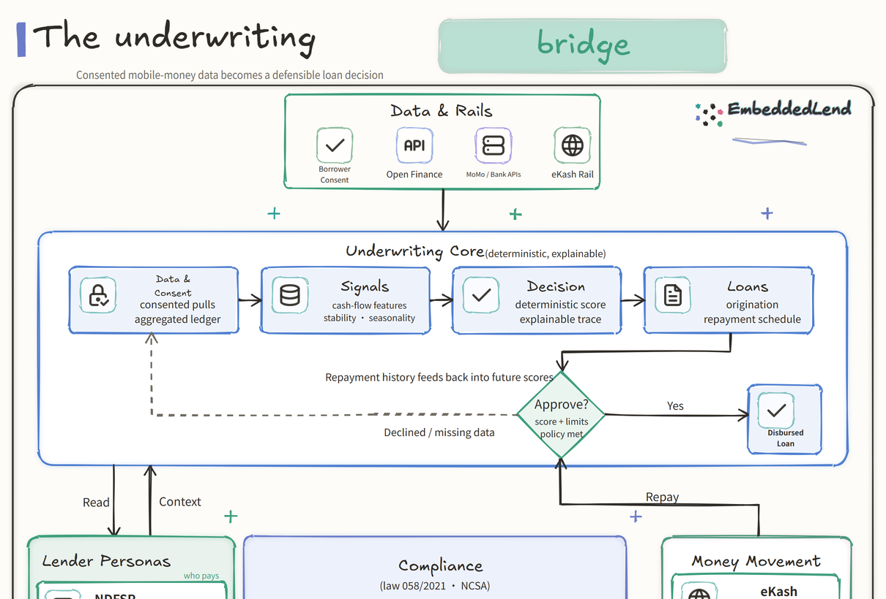

Hand-Drawn Architecture · EmbeddedLend
The Underwriting Bridge, Drawn by Hand
A companion to the PRD — the same consent-based SME underwriting architecture, rendered as an approachable hand-drawn diagram: data in, decision made, loan out, repayment loop.
The Hand-Drawn Architecture
The full architecture of the PRD, rendered as one approachable hand-drawn flow. Four inputs on the left (consent, open finance, mobile-money and bank APIs, eKash rail) feed the underwriting core (data & consent, signals, decision, loans). A policy gate approves or retries, the output is a disbursed loan, and repayment history loops back to improve future scores. Side panels carry the lender personas (who pays), compliance (consent records, audit, residency), and money movement (disburse and repay over eKash).

Figure 1 — EmbeddedLend architecture, hand-drawn style. Animated GIF, interactive HTML, and editable Excalidraw versions ship alongside this document.
Interactive companion: open architecture/diagram.html in a browser for the animated, explorable version. The .excalidraw file is editable. The .svg is the scalable static source.
Reading the Diagram
1. What flows in (left side)
- Borrower Consent — the legal gate: data is pulled only with the borrower's opt-in (Law 058/2021 + GDPR-style rights).
- Open Finance — BNR's data-sharing rail (voluntary Phase 1 now, mandatory Phase 2 2026–28).
- MoMo / Bank APIs — MTN MoMo, Airtel, bank records, MTN KYC.
- eKash Rail — the national payment switch (RWF20 flat, RWF10m cap, one integration).
2. The underwriting core (center)
- Data & Consent — consented pulls, aggregated ledger.
- Signals — deterministic cash-flow features: income stability, concentration, seasonality, repayment capacity.
- Decision — a deterministic, explainable score plus a full decision trace. Numbers computed by code; narrative by AI. No black-box scores.
- Loans — origination and repayment scheduling.
3. The gate and the loop
- Approve? — policy rules (score + limits). "Declined / missing data" routes back for retry.
- Disbursed Loan — the output, sent over eKash.
- Repayment loop — repayment history feeds back into future scores. This is the moat: the aggregated credit-history dataset no single lender owns.
4. The side panels
- Lender Personas (who pays) — NDFSP (full-stack underwriting), MFI/SACCO (scoring + decision APIs), Vertical SaaS (embedded credit flow).
- Compliance — consent records + revocation, tamper-proof audit, data residency — the regulator's comfort layer.
- Money Movement — disburse and repay over eKash: one integration, cheap, instant, interoperable.
The MVP Slice (flagged)
Everything shaded in the PRD's MVP figure is what we build first — the "one livable room": one consent flow, one data source (mobile-money cash-flow), the scoring engine, the decision service, the eKash connector, and the core endpoints (consent, data/summary, score, decisions, loans, disbursements, repayments). The hand-drawn diagram shows the whole system; the MVP is the smallest cut through it that proves the bet.